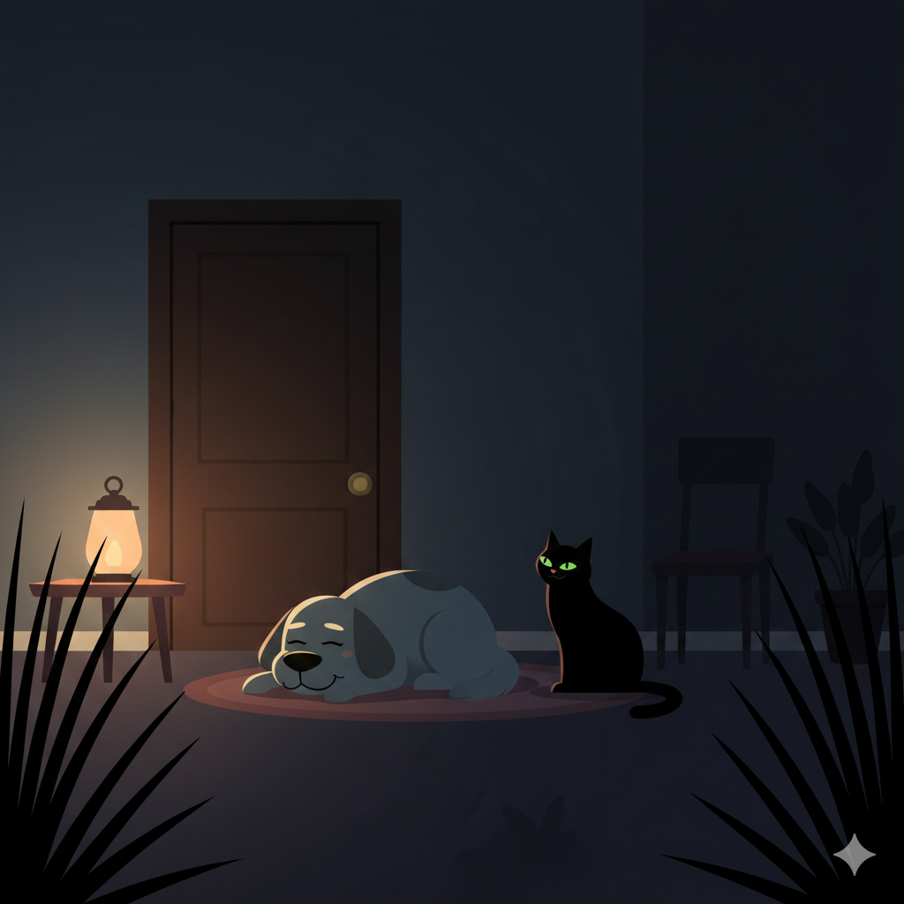

Miku miró a Jake con preocupación. Sabía que la curiosidad podía ser peligrosa, especialmente para alguien mayor.
La puerta seguía abierta. El aire traía promesas de aventura… pero también incertidumbre.

¿Qué decisión tomarán?